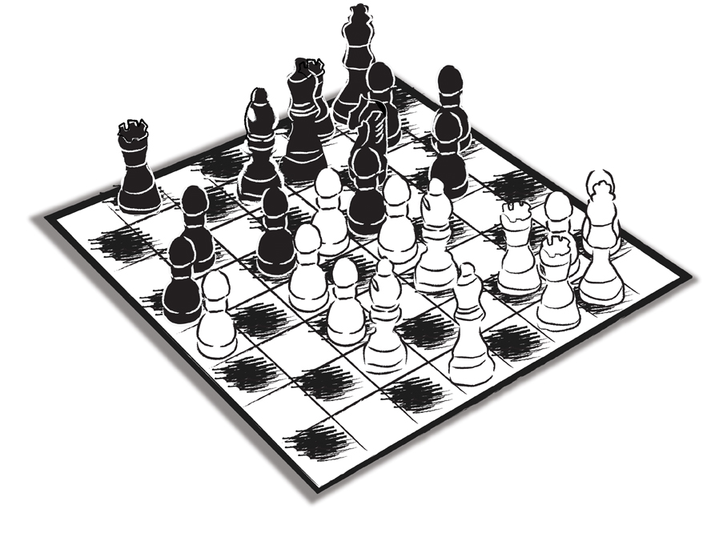

Bazen aradan zaman geçtikten sonra dönüp aynı gazete haberlerine bir kez daha baktığınızda, o günün koşullarında size normal gibi gelmiş olan pek çok olay, birdenbire veçhe değiştirir. İnsan fıkra anlatılıyormuş, espri yapılıyormuş duygusuna kapılabilir. Ya da bir tiyatro oyunundasınızdır sanki…
Ortada bir kurgu olduğu kanaatine kapılırsınız… “Yok artık canım, siz de abartmayın,” falan dedirtecek türden bir kurgu…
Ancak bazen gerçek hayattaki durum komedileri, kurgulanmış olanları kıskandıracak bir nitelik kazanabilir.
Haber birinci sayfadan verilmişti. Bir zamanların ‘Gazinocular Kralı’ rahmetli Fahrettin Aslan’ın oğlu Sacit Aslan babasından söz ederken demişti ki: “Babam bir keresinde Emel Sayın’ı bir paşaya götürdü!”
Böyle bir durumda iletişim adına stratejik bir mütalaa ve tavsiye vermek gerekseydi, taraflara -burada Kenan Evren’e ve Emel Sayın’a- ne yapmaları söylenirdi?
Susmaları, değil mi? Sacit Aslan’ın açıklamasını ciddiye almamaları... Çok sıkıştırılırlarsa, o zaman en fazla, rahmetli Fahrettin Aslan’ın mezarda rahat bırakılmasının yerinde olacağı, söylenebilirdi. Rahmetlinin böyle gayri ciddi bireysel publicity (medyada görünürlük) aksiyonlarına alet edilmemesi gerektiği belirtilebilirdi. Bu şekilde kamu vicdanını harekete geçirecek, muhatap olan taraflara karşı ‘ısı kalkanları’ oluşturacak bir ifade biçimi işe yarayabilirdi. Bununla birlikte tüm bu açıklamalar da ancak çok darda kalınması halinde yapılabilirdi.
Nitekim Emel Sayın öyle yaptı. Ancak Evren Paşa konuşmadan duramadı. Onun medyada hayli büyük bir mürekkep payı ile sunulmuş olan şu açıklaması, iletişim tarihine geçmiştir:
“O ‘Paşa’ ben değilim!...”
Sanki Sacit Aslan, “O paşa Kenan Evren’di,” diye ısrar etmiş gibi… Ayrıca etmiş olsa bile, bu açıklama yanlıştı.
Paşa onunla da kalmamış, Elif Korap’a verdiği röportajda Emel Sayın’la konuşmadıklarını, şarkıcının özür için gelip elini öptüğünü, ancak kendisinin onu affetmediğini de anlatmış ilaveten…
Fazladan yapılan açıklamalar, şeffaflık adına artı puan yazacağına yarayı kaşımaya neden olabilir. Aristoteles, itidalin fazilet olduğuna vurgu yaparak “Erdem, mutedil olandır,” der.
Burada geçerli olan ilkeyi şu üç kelimerle özetleyebiliriz:
“Fazla olan yanlıştır!” Hani yemeğe tuz ya da biber konunca lezzetli olur da, tuz ve baharatı abarttığınızda o yemek yenemez hale gelir ya, onun gibi bir şey…
Bu ‘gereksiz ve yanlış olan fazlalık’ için bir başka örnek, Ali Müfit Gürtuna’nın liderliğinde faaliyete geçmiş olan ‘Turkuaz Hareketi’ çevresinde gelişmişti.
13 Kasım 2006’da Sabah’ta Balçiçek İlter (o zamanki soyadıyla Pamir) Hanım’ın röportajı ve haberi şu giriş yazısıyla yer aldı:
“Ali Müfit Gürtuna: Seçime kadar parti tamam. Mustafa Sarıgül bizimle. 100 bin dolar harcayıp, Turkuaz Hareketi'ni başlatan Gürtuna, vitrinindeki öteki sürpriz isimleri şöyle sıraladı: Ali Talip Özdemir, Burhan Özfatura, Garo Mafyan, Sami Selçuk, Gökhan Çapoğlu, Ahmet Bilgin, Işılay Saygın, Naci Görür, Cem Kozlu...”
Ben Akşam gazetesinde bu konuya temas etmiştim:
“Ali Müfit Bey’e katılan Beyin Takımı’nın listesi yayınlandı... ‘Hepsine gerek yok!’ demişim, ‘Bir tanesi yalanlasa, Ali Müfit Bey de biter, partisi de!’ Beyin Takımı, hem de bu deve dişi gibi isimlerle, böyle mi açıklanır?”
Nitekim haberin ertesi günü beş tanesi yalanlamıştı. Hem de Gürtuna’yı hayli zor durumda bırakan ifadelerle: Cem Kozlu, Mustafa Sarıgül, Talip Özdemir, Gökhan Çapoğlu, Sami Selçuk!... Gürtuna bu aşamada aşağıya tükürse sakal, yukarıya tükürse bıyık. Ne konuşursa konuşsun, kaybedecektir... ‘Bunlar beni sattılar,’ dese de, ‘Bana destek sözü vermişlerdi,’ buyursa da, ‘Yanlış anlamışım!’ diye sızlansa da... En iyisi, susup gerçekten katılanlarla yetinmek...
Ah Ali Müfit Bey, ah!... Teknosa’nın Genel Müdürü ve AMPD başkanı, dostum Mehmet Nane’yle AMPD (Alışveriş Merkezleri ve Perakendeciler Derneği) toplantısında sohbet ediyorduk. Bir çırpıda başlığı söyleyiverdi: “Partiyi doğmadan bitirdiler!”...
Bir sonraki gün gazetelerin başlığı şöyleydi:
“Turkuaz’dan fiyasko çıktı. Parti kurmaya hazırlanan Turkuaz Hareketi Lideri Ali Müfit Gürtuna’nın ‘Benim kurmaylarım’ diyerek adını verdiği tüm isimler kendisini yalanladı...”
Aynı haberin içinde açıklamalardan da örnekler vardı. Mustafa Sarıgül: “Amacının sağı karıştırmak olduğunu sanıyordum. Meğer solu da karıştırmak istiyormuş.” Cem Kozlu: “Siyasete dönmeyi düşünsem bile bu Turkuaz’la olmaz.” Ali Talip Özdemir: “Görüşmedim.” Gökhan Çapoğlu: “Görüşmedim.” Sami Selçuk: “Kuracağı partide yer almayacağımı açıkladım…”
Sonuç: Turkuaz hareketinden bir parti doğmadı. Ali Müfit Gürtuna gibi bir zamanlar İstanbul halkının çok büyük bir çoğunluğunun desteğini arkasına almış usta bir politikacı, pek çok temel iletişim ve ilişki kuralını ihlal etmenin yanı sıra ‘Fazla olan yanlıştır’ ilkesini de hiçe saydığı için gereksiz yere kendi kendine çelme taktı… Olduğu yerden bir daha doğrulabilir mi?
Zor!...